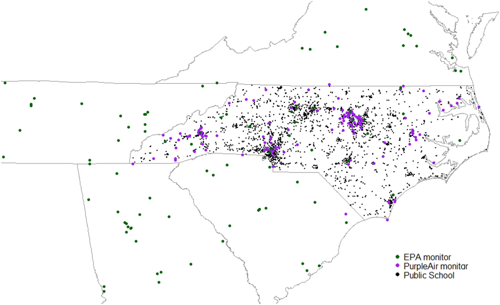
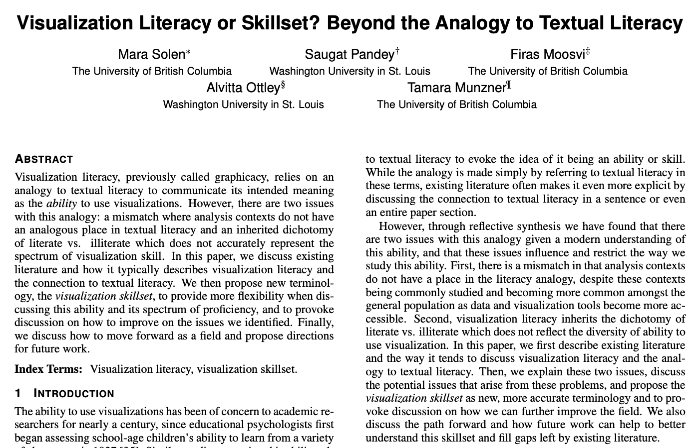
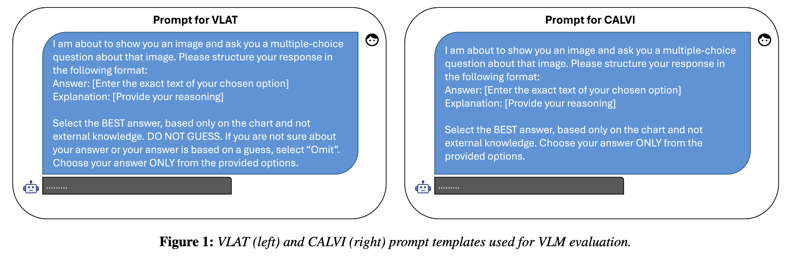
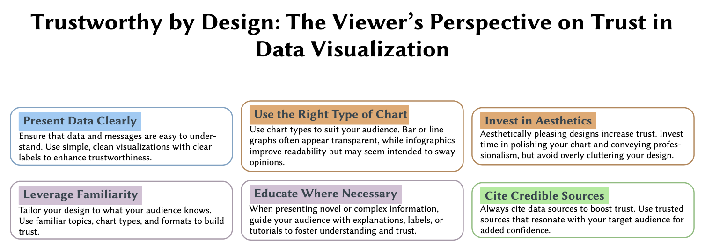
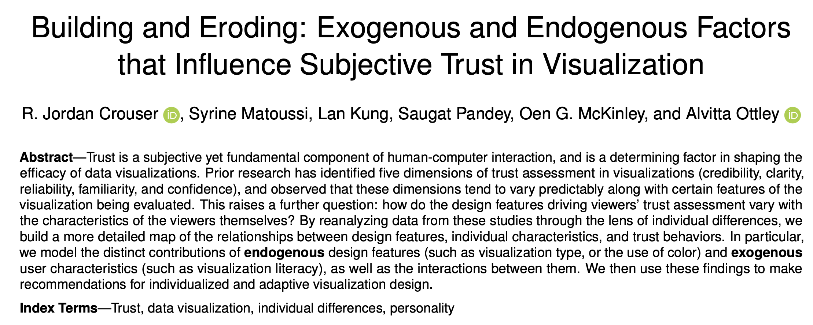
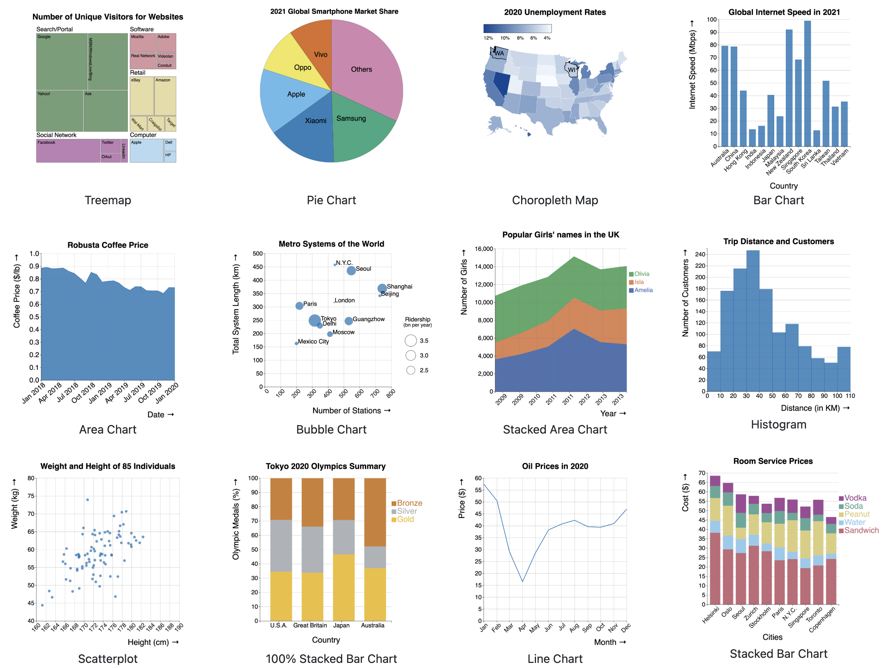
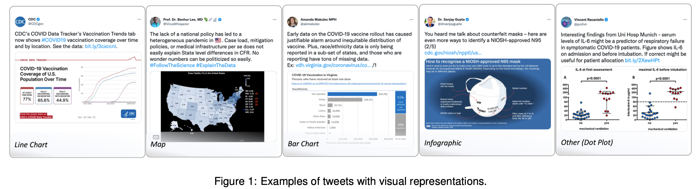

Saugat Pandey(Saw-gaat Paan-day)
Assistant Professor, Computer Science · Furman University
I recently completed my PhD in Computer Science & Engineering at Washington University in St. Louis, where I was a graduate research assistant in the Visual Interface and Behavior Exploration Lab (VIBE). My research sits at the intersection of data visualization, human perception, and AI. I study how people read, trust, and reason with visual data, and how AI/ML systems can make that easier.
New: My lab website is live! Visit The Mocha Lab to learn more about our research in visualization, perception, and AI at Furman University. Prospective students and collaborators, say hello.
Publications

Estimating PM2.5 Concentrations at Public Schools in North Carolina Using Multiple Data Sources and Interpolation Methods
Nature Scientific Reports

Visualization Literacy or Skillset? Beyond the Analogy to Textual Literacy
IEEE VIS Workshop 2025 (VisComm)

Benchmarking Visual Language Models on Standardized Visualization Literacy Tests
Computer Graphics Forum, EuroVis 2025


Building and Eroding: Exogenous and Endogenous Factors that Influence Subjective Trust in Visualization
IEEE VIS 2024

Mini-VLAT: A Short and Effective Measure of Visualization Literacy 🏆
Computer Graphics Forum, EuroVis 2023 • Best Paper Award

Do You Trust What You See? Towards A Multidimensional Measure of Trust in Visualization
IEEE VIS 2023

Updates
Launched The Mocha Lab website — my research lab at Furman University focused on visualization, perception, and AI.
Started as an Assistant Professor in the Department of Computer Science at Furman University, Greenville, SC! 🎉
Successfully defended my PhD dissertation at Washington University in St. Louis.
Paper titled "Estimating PM2.5 Concentrations at Public Schools in North Carolina Using Multiple Data Sources and Interpolation Methods" published in Nature Scientific Reports.
Paper titled "Visualization Literacy or Skillset? Beyond the Analogy to Textual Literacy" accepted at IEEE VIS Workshop 2025 (VisComm).
Attended EuroVIS in Luxembourg City, Luxembourg from May 31 – June 6 to present my work on benchmarking language models.
Moved to Seattle for Summer 2025 to work at Adobe as a Research Scientist Intern.
Passed my dissertation proposal.
Paper titled "Benchmarking Visual Language Models on Standardized Visualization Literacy Tests" accepted at EuroVIS 2025.
Joined Adobe as a Research Scientist Intern for Summer 2025.
Paper titled "Trustworthy by Design: The Viewer's Perspective on Trust in Data Visualization" accepted at ACM CHI 2025.
Finished co-instructing "Introduction to Visualization" with an average rating of 6.67/7.
Paper on trust factors accepted at IEEE Visualization 2024.
Collaborate
I'm always excited to hear from prospective students, collaborators, and anyone interested in visualization, perception, AI, or data science. Tell me a bit about yourself and what you're interested in, and I'll get back to you — or email me directly at spandey2@furman.edu.